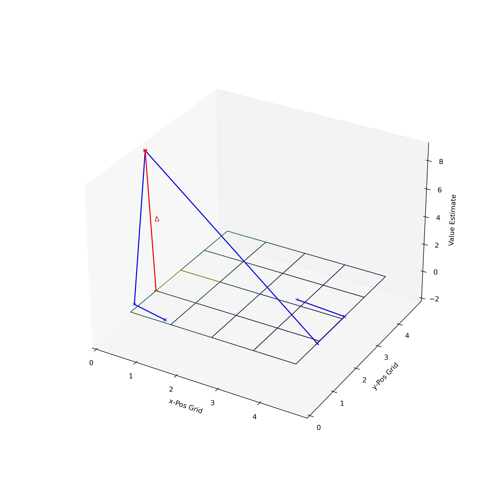

Deep Reinforcement Learning
9 - Overview Deep Learning - Towards Deep RL
Recap – Q-Learning – Off-Policy TD control

- At time step \(t\), we start from state \(S_t\) and pick action according to \(Q\) values, \(A_t = \arg\max_{a \in \mathcal{A}} Q(S_t, a)\); \(\varepsilon\)-greedy is commonly applied.
- With action \(A_t\), we observe reward \(R_{t+1}\) and get into the next state \(S_{t+1}\).
- Update the action-value function: \(Q(S_t, A_t) \leftarrow Q(S_t, A_t) + \alpha (R_{t+1} + \gamma \max_{a \in \mathcal{A}} Q(S_{t+1}, a) - Q(S_t, A_t))\)
- \(t = t+1\) and repeat from step 1.
Difference to SARSA: Q-learning does not follow the current policy to pick the second action, but rather estimate \(q_∗\) out of the best \(q\) values independently.
Relationship Between DP and TD

Relationship Between DP and TD 2

Value Function in Grid World Example
Towards a more realistic Grid
We considered this simple discrete grid environment.

For a real robot: We would consider a continuous state space (position).
Introduction of a Value Function over the continuous Environment
Environment taken as continuous.
Observations: Continuous two dimensional position
Actions: Discrete (for now) directions and stepping
Position Update: Not completely deterministic
 
Neural Networks

Classification as an Example Task

Forward computation for the single layer
For a single layer, we had as the basic equation for a neural network:
\[ \mathbf{\hat{y}} = \mathbf{W} \mathbf{x} + \mathbf{b} \]

Or, written with the bias augmented as the first constant entry into the input vector:
\[ \mathbf{\hat{y}} = \mathbf{W} \mathbf{x} \]
A Neuron Model
Biological neuron as the main processing unit of nervous systems. It integrates activity from a distributed network of neurons.

Model of a neuron: weighted input from different sources are summed up. An output function is applied on the integrated inputs.
Goal: Linear Classifier
Visualization of the image space: each image is represented as a single point, three classifiers are shown.
Gradient Descent: Iterative Search for Minimum

Iterative optimization algorithm
- start from an initial point \(\vec{u}\) (initial guess) on the error function
- Iterate (\(k\) = iteration, \(\eta\) = learning rate):
Determine the gradient at that point and make a step: \(\vec{w}_{k+1} = \vec{w}_{k} - \eta \nabla_{\vec{w}} E^{(i)}(\vec{w})\)
Until: \(\nabla_{\vec{w}} E^{(i)}(\vec{w}) \approx 0\)
Then we found a minimum.
Possible Problems for Gradient Descents

- What kind of problems could we encounter in gradient descent?
- What might be solutions?
Computation in Linear Classification Example}

Classification of images – shown is the simplified mapping of an image to class scores for a linear classifier. Note that this particular set of weights \(\mathbf{W}\) is not good at all: the weights assign our cat image a very low cat score.
Computation in NN: Overview Learning Cycle


Training Deep Neural Networks

Why is it difficult to learn such Deep Neural Networks consisting of multiple layers?
There is a huge number of parameters in deep networks. Those have to be trained.
Key ideas of Convolutional Neural Networks
- Convolution
- Non-Linearity (ReLU)
- Pooling/ Sub-Sampling
- Classification – fully connected layer

Convolution

Basic Idea: Convolve a filter on an image — filter slides over the image spatially computing the dot product
Convolution: Shared Weights

- Uses a sparse representation: only a local neighborhood of input values is integrated — signals have strong local correlations.
- Sharing of features: single parameter set (kernel/ mask) used on all possible locations — signals where features can appear anywhere, are invariant to translations.
Required Parameters: Fully-Connected Case
As an example: a \(200 \times 200\) image.
For a fully-connected neural network with \(400,000\) hidden units: this would require 16 billion parameters.

Convolutions Illustrated

Example: AlexNet – Kernels (first convolutional layer)

Convolutional kernels learned by AlexNet’s first layers. The network learned a variety of frequency and orientation-selective kernels.
Pooling Layer

Basic Idea: Progressively downsample spatial size — after convolutional layer.
Advantage: becomes robust against variation of location (subsequently small translations after combining first convolutional layer).
Different forms of pooling: max pooling, average pooling, …
Fully Connected Layer – Classification

AlexNet – Results

Overview Learning Cycle
Deep Q Network Overview

3-dimensional state space (blue) and 2 actions (red); green nodes represent a NN.
Left: naive approach that takes multiple forward passes to find the argmax action. Right: more efficient approach, \(Q(s,a)\) computation is effectively shared among the neurons in the network.
Example: Learning in Breakout 2

Results - “Superhuman” Performance
Summary
“Our DQN method outperforms the best existing reinforcement learning methods on 43 [out of 49] of the games without incorporating any of the additional prior knowledge about Atari 2600 games used by other approaches.”